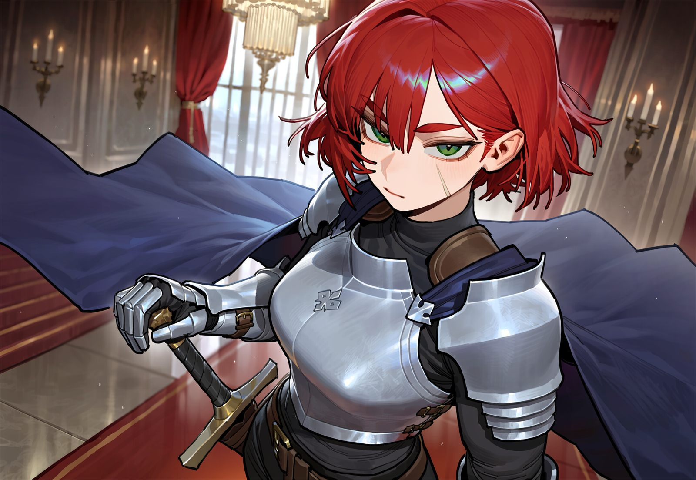
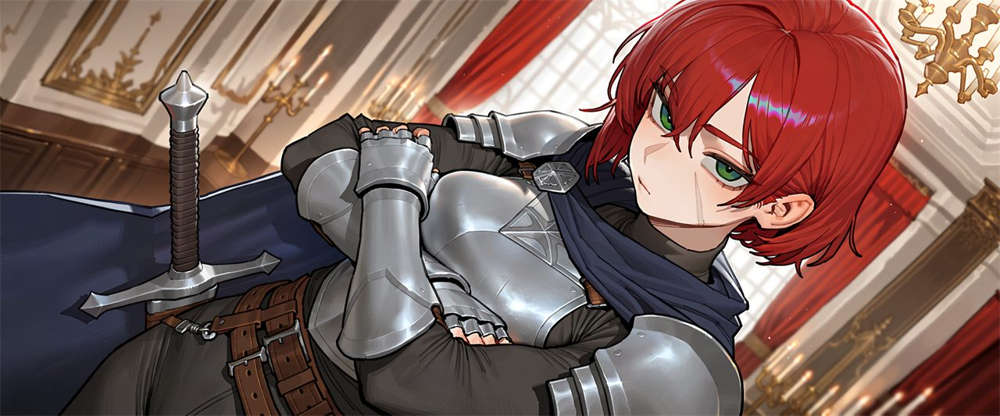

기사대장 · 상급기사카트린 볼크무뚝뚝하고 명예를 따지며 병사를 먼저 챙깁니다. 새끼 동물 앞에서는 표정이 풀립니다.
- 나이
- 30세
- 직책
- 기사대장 · 상급기사
- 영주를 부르는 말
- 주군
- 말투
- 다나까체
- 바라는 것
- 자기 기사단, 그리고 부하를 헛되이 잃지 않는 것.
- 질투하면
- 훈련이 거칠어집니다.
표정
EXPRESSIONS

기사대장 · 상급기사카트린 볼크무뚝뚝하고 명예를 따지며 병사를 먼저 챙깁니다. 새끼 동물 앞에서는 표정이 풀립니다.
